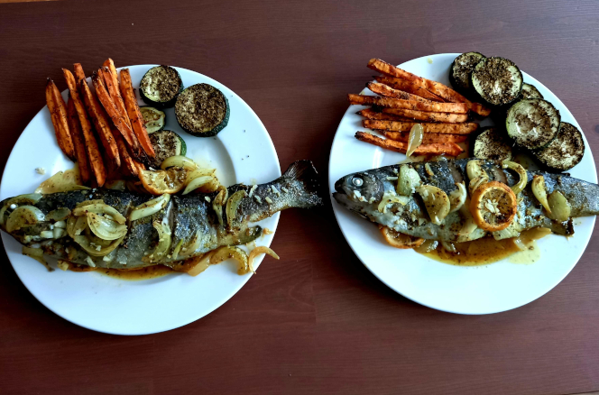
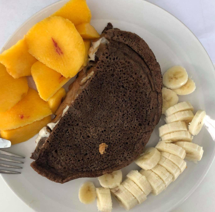

Zobacz nasze menu
 Najlepsze obiady w mieście
Kuchnia polska - serwujemy najlepsze, domowej roboty kotlety schabowe w Warszawie!
Kuchnia włoska - aromat ziół i pomidorów w naszych potrawach przeniesie Cię do słonecznej Toskanii
Kuchnia azjatyka - serwujemy potrawy pochodzące z najodleglejszych zakątków Azji
Kuchnia indyjska - aromatyczne potrawy z ryżem i soczystym kurczakiem w roli głównej
Kuchnia amerykańska - serwujemy idealnie wypieczone steki i burgery z naszym autorskim sosem

Mamy też przepyszne, ciepłe zupy oraz kremy warzywne. Ponad 30 rozmaitych smaków zup
z każdego zakątka świata

Serwujemy też lekkie i pożywne śniadania oraz kolacje. Pracujemy od poniedziałku do piątku:
od 8:00 do 21:00 oraz w soboty od godziny 10:00 do 16:00